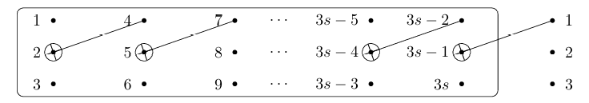
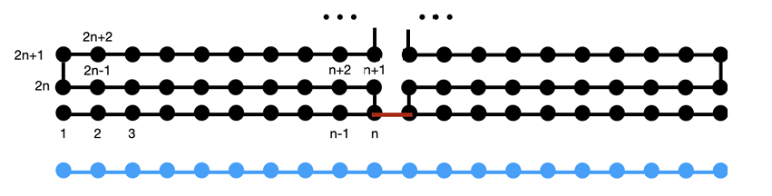

Quantum Expander笔记
《Depth-1 expanders on the unitary group and applications》2609.01605v1
quantum expander背景
定义
定义（量子扩展器）。若有限酉算子集合 $\{U_1,\dots,U_m\} \subset U(d)$ 对所有满足 $\operatorname{Tr} X = 0$ 的 $X$ 均满足：
$$\left\Vert{} \frac{1}{m} \sum_i U_i X U_i^\dagger \right\Vert{}_2 \leqslant (1 - \Delta) \Vert{}X\Vert{}_2$$
则称其为能隙（gap）为 $\Delta > 0$ 的量子扩展器（quantum expander）。
如果取X=I会得到平凡的特征值上界1，其他特征值应当小于1.
衡量这些衰减量与平稳量之间差异的gap就是Δ。反复作用该信道后衰减速度近似于指数衰减，此时gap代表着指数衰减的速度，这一点有点像有能隙多体物理中物理信息随着距离依照能隙指数衰减的性质。
与最大纠缠态正交的向量，恰好对应于一个无迹矩阵。无迹这个条件出现在最核心的量子扩展器定义当中。
下面给出上一句话的简要证明
$$|\Gamma\rangle=\frac{1}{\sqrt d}\sum_{i=1}^{d}|i\rangle\otimes|i\rangle.$$
对于两个 d 维系统组成的复合 Hilbert 空间，任意一个向量都可以表示为
$$|\psi\rangle=\frac{1}{\sqrt d}\sum_{i,j=1}^{d}A_{ij}|i\rangle\otimes|j\rangle=(A\otimes I)|\Gamma\rangle$$
其中 $A$ 是一个 $d\times d$ 矩阵。这个对应关系是双射，即每一个复合系统中的向量都唯一对应一个矩阵 $A$。
接下来，计算 $|\psi\rangle$ 与最大纠缠态 $|\Gamma\rangle$ 的内积：
$$\begin{aligned}\langle\Gamma|\psi\rangle&=\frac{1}{d}\sum_{k=1}^{d}\sum_{i,j=1}^{d}A_{ij}\langle k|i\rangle\langle k|j\rangle\\&=\frac{1}{d}\sum_{i=1}^{d}A_{ii}\\&=\frac{1}{d}\operatorname{Tr}(A).\end{aligned}$$
$$\langle\Gamma|\psi\rangle=0
\quad\Longleftrightarrow\quad
\operatorname{Tr}(A)=0.$$
度（degree）是指酉算子的个数 $m$。扩展器族（expander family）是一系列表现出相同 $m$ 和 $\Delta$、但维数递增 $d_1, d_2, \dots$ 的量子扩展器；即具有常数能隙和常数度。
量子设计（Quantum $k$-design） 是指用有限个量子操作（或状态）组成的集合，去代替对整个连续/庞大群（如 Haar 随机或整个 Clifford 群）进行积分或平均。
本文的设计有以下两个特点：
2-设计：每次群作用同时作用在两个副本上（形如$U\otimes\bar{U}$），并不是完整的unitary 2-design moment operator，因为后者形如$U^{\otimes 2}$，关注的是算符的二阶矩
常数大小：酉门的个数永远是常数，不会增加。
$\Vert X \Vert_2$ 表示 Hilbert-Schmidt 范数（也称 Frobenius 范数），定义为：
$$\Vert{}X\Vert{}_2 = \sqrt{\operatorname{Tr}(X^\dagger X)} = \sqrt{\sum_{i,j} \vert{}X_{ij}\vert{}^2}$$
用途
[!info]
如果我们按照 Haar measure 从整个d维 Hilbert space 的单位球面上均匀随机抽取一个纯态，就得到 Haar-random state。Haar随机态是不偏向 Hilbert space 中的任何特殊方向，也就是拥有旋转不变性（酉群）。
从Haar随机矩阵到Haar随机态：
固定一个初态$\ket{\psi_0}=\ket{0}^{\otimes n}$，施加一个Haar随机酉矩阵
$$\ket{\psi}=U\ket{\psi_0},\quad U\sim Haar(U(d))$$
得到的$\ket{\psi}$就服从Haar随机态分布
这是因为Haar测度具有左不变性，也即左作用任意一个固定的酉矩阵V，其分布仍不变$VU\sim Haar(U(d))$，因此$V\ket{\psi}=VU\ket{\psi_0}$与原来的$\ket{\psi}$具有相同的概率分布，Haar随机态的分布对任意酉变换不变。
Quantum expander 与 Haar average 的关系
一个理想的Haar随机酉平均信道
$$\mathcal{E}_{Haar}(\rho)=\int U\rho U^\dagger d\mu(U)$$
对于任意密度矩阵，作用后都变成最大混合态
$$\mathcal{E}_{haar}(\rho)=I/d$$
这是因为对积分式整体进行一个酉共轭变换，由于haar测度的左不变性，共轭后的结果仍然不变，这意味着计算结果与任意一个酉矩阵可交换，那么这个结果一定是标量，在密度矩阵的归一限制下一定是I/d。
这个作用类似于随机数生成器，完全扰乱了初始态的信息，使熵达到最大值。
在量子多体物理和黑洞物理中，一个系统如果能快速削弱 $V_{\text{inv}}^\perp$，就说明它是一个极佳的混淆器（Scrambler）。
初始时，信息可能是局部可读的（由 $v_{\perp}$ 编码）；连续作用几次后，$v_{\perp} \to 0$，局部信息被完全抹平并扩散到整个系统的全局纠缠中，使得任何局部的测量都再也无法提取出初始信息。
在一些量子线路设计中需要用到这一点，但是要真正实现理想化的Haar随机酉平均信道是非常耗费资源的。一个自然的问题是，我们能否通过几个有限已知的酉矩阵，去近似这个随机信道？这正是quantum expander的意义之一。如果quantum expander的谱隙为Δ，那么
$$||\mathcal{E}(X)||_2\le(1-\Delta)||X||_2$$
这表示每执行一次 quantum expander channel，偏离最大混合态的部分就会被收缩。quantum expander 可以让量子态逐渐趋近最大混合态。
具体在本文中，设计的想法是类似的，但是目标的态有些不同。文中作者使用了16个具体的酉矩阵，构造了$\mathcal{T}=\frac{1}{16}\sum_{i=1}^{16}U_i\otimes\bar{U_i}$，他的地位相当于上一段描述的随机信道的近似，但是它作用的空间是双系统态，不动点是高维EPR态（最大纠缠态）
$$\mathcal{T}\ket{\Gamma_n}=\ket{\Gamma_n},\quad\ket{\Gamma_n}=\frac{1}{2^{n/2}}\sum_{x\in\{0,1\}^n}\ket{x}\otimes\ket{x}$$
并在正交子空间上具有常数级（谱）收缩
随机游走
文中给出的14个由CNOT门组成的酉算符生成元集合，在群上定义了一个具有常数谱隙的随机游走，这个随机游走对应的Cayley图就是一个expander graph，下面解释概念
把所有可能的CNOT电路对应的酉矩阵收集起来，形成一个群
$$G_n=\braket{CNOT_{i,j}:i\neq j}$$
论文证明
$$G_n\simeq SL(n,\mathbb{F})$$
Caylay图：把群中每一个元素看成图上的一个顶点，如果两个元素相差一个群作用，那么这两个元素之间就有边，这样构造出的图叫做Caylay graph
$$Cay(G_n,S)$$
每个顶点都可以通过m个群元到达m个邻居，所以这是m-regular graph
如果这张图具有良好的扩展性，那么不论初始顶点在哪里，经过有限步随机游走（随机选取一个群元对其作用），分布都会快速趋向整个群上的均匀分布
对m个群元，随机游走的平均算符为$A=\frac{1}{m}\sum_{i=1}^mL_{P_i}$，也就是对所有群元素做了算数平均，$L_{P_i}$表示左作用$P_i$
对联通的正则图，均匀分布对应的特征向量$\frac{1}{\sqrt{|G_n|}}\sum\ket{g}$，对应特征值1，谱隙代表第二大特征值比1小了多少，也即$\lambda_2=1-\Delta$。就像上文所说的一样，谱隙越大，随机游走的混合越快。
这其实就是用图的方法解释了expander的名称来由以及他的混合功能
在文中2.2小节讲了CNOT群上的expander，下文会详细介绍他的构造和证明
物理意义
根据薛定谔方程，能隙的物理意义是基态与第一激发态之间演化震荡的特征时间，也和关联长度有关，可以通过相对论型色散模型看出：
$$E(k)=\sqrt{\Delta^2+(\hbar ck)^2}$$
其中c是传播速度，Δ是零动量处的能隙
计算标量场在基态的t=0关联函数
$$C(r)=\braket{\phi(r,0)\phi(0,0)}$$
利用
$$\phi(x,t)=\int\frac{dk}{2\pi}\frac{1}{\sqrt{2w_k}}(a_k e^{ikx-iw_kt}+a_k^\dagger e^{-ikx+iw_kt})$$
得到
$$C(r)=\int_{-\infty}^\infty\frac{dk}{2\pi}\frac{e^{ikr}}{2\sqrt{\Delta^2+c^2k^2}}=\frac{1}{2\pi c}K_0(\frac{\Delta|r|}{c})$$
这个积分没有解析解，我们分析r很大时候的衰减特征
$$C(r)\sim e^{-\Delta r/c}/\sqrt{r}$$
取$\hbar=1,c=1$后，关联长度写作$\xi=1/\Delta$，关联进行指数衰减
面积定律与体积定律
纠缠标度面积定律：二分纠缠熵和MPS最小割息息相关，如果再模糊一些推广到多维系统，可以想到纠缠熵大致有这个被划分出的系统A的边界的两级，也即
$$S = O(\vert{}\partial A\vert{}), \quad \text{“面积定律”}$$
能隙与面积定律的关系，一维情况被Hastings严格证明：
对于一维局域量子自旋系统，如果 Hamiltonian 有唯一基态，并且基态与激发态之间存在非零能隙，那么基态跨越任意空间切割的纠缠熵有一个与系统总长度无关的上界（也即O(1)）。
也就是说，即使链长N趋于无穷，基态的纠缠熵也不会随N线性增长，而是保持为常数阶。这就是一维面积定律的含义。
高维只是猜想，但有很多数据支撑。
如果有一片参数空间基态满足面积定律，那么他们可以被归为同一个量子phase.能隙闭合时，穿过量子相变点。量子临界点出现的对数纠缠熵修正意味着长程关联。
最后，还有具有体积定律（volume-law）纠缠熵的状态：
$$S = O(\vert{}A\vert{}) = O(N^d), \quad \text{“体积定律”}$$
这类状态表现于高度纠缠的状态中，例如随机量子态，或者量子多体哈密顿量的高度激发本征态，它们是我们以后研究量子热化时需要考虑的重要对象。
本文研究的对象就是一维体积定律量子系统
16酉矩阵完整构造
16个酉矩阵，在3s个qubit上，形成的谱隙至少为$1/(2·10^8)$，每一个酉矩阵都可以写作深度-1的线路
$U_1,...,U_6$只在前三个qubit上有非平凡作用
$$ \begin{aligned} U_1 &= X \otimes I_{2^{3s-1}}, & U_2 &= Z \otimes I_{2^{3s-1}}, \\ U_3 &= \text{CNOT}_{1,2} \otimes I_{2^{3s-2}}, & U_4 &= \text{CNOT}_{2,1} \otimes I_{2^{3s-2}}, \\ U_5 &= I_2 \otimes \text{CNOT}_{2,3} \otimes I_{2^{3s-3}}, & U_6 &= I_2 \otimes \text{CNOT}_{3,2} \otimes I_{2^{3s-3}}. \end{aligned} $$
7到16个酉矩阵是以3个qubit为周期的平移不变矩阵（积）
$$ \begin{aligned} U_7,\dots,U_{12} &= (\text{CNOT}_{a,b})^{\otimes s} = \prod_{i=0}^{s-1} \text{CNOT}_{3i+a,3i+b}, \quad \text{for } 1\le a\ne b\le 3, \\ U_{13} &= \prod_{i=0}^{s-1} \text{CNOT}_{3i+4,3i+2}, & U_{14} &= \prod_{i=0}^{s-1} \text{CNOT}_{3i+5,3i+1}, \\ U_{15} &= \prod_{i=0}^{s-1} \text{CNOT}_{3i+5,3i+3}, & U_{16} &= \prod_{i=0}^{s-1} \text{CNOT}_{3i+6,3i+2}. \end{aligned} $$
下面这张图展示了$U_{13}$的作用效果

文章中构造的这16个酉门的作用类似于把最大纠缠态重新排列了
应用
SU(2^n)上的深度1-expander
这一节可以用扩展图来理解，在前文已经阐述
那么还是一样的，$G_n$代表n个qubit上的CNOT群。只使用上述16个酉矩阵中的$U_3,...,U_{16}$这14个，最终达到的效果是对于任意$G_{3s}$的有限维酉表示，都有常数谱隙
$$||\frac{1}{14}\sum_{i=3}^{16}\rho(U_i)-\mathbb{E}_{P\sim\mu(G_{3s})}\rho(P)||\le1-\frac{1}{48·10^5}$$
根据同构关系将这14个CNOT群元对应到$SL(3s;\mathbb{F}_2)$上，构成SL群的子集$\Sigma_{3s}$。首先证明他们的Kazhdan常数下界
$$\mathcal{K}(SL(3s;\mathbb{F}_2);\Sigma_{3s})>\frac{1}{400}$$
Kazhdan常数是用来控制谱隙的，他们的关系为
$$ \lambda_{\max}\left( \frac{1}{|S|}\sum_{g\in S} \rho(g) - \mathbb{E}_{g\sim \mu(G)} \rho(g) \right) \le 1 - \frac{\mathcal{K}(G;S)^2}{2|S|}. $$
其中$|S|=14$，最后带回去就得到了最终结论，证明了常数谱隙下界
我们证明了这14个CNOT元素有很好的谱隙。但是还有一个缺陷需要改善——这14个CNOT元素的不变子空间是兼并的，除了最大混合态以外，还有其他元素，即
$$C(G_n)=Span\{I,\ket{+^n}\bra{+^n},\ket{0^n}\bra{0^n},\ket{0^n}\bra{+^n},\ket{+^n}\bra{0^n}\}$$
验证这个不变子空间也是简单的，可以把CNOT作用在$\ket{00}$和$\ket{++}$上即可得到。我们考虑酉算子的共轭作用所以I自然是不变矩阵。
但是完整的酉群只有单位阵才能与任意元素对易，所以通过添加X和Z这两个元素限制不变子空间，接下来作者证明新的平均算符在额外的四维空间上具有收缩作用。先把不变子空间写成投影的形式
$$\mathcal{P}_G=\sum_{i=1}^5\ket{b_i}\bra{b_i}$$
其中编号为1的代表最大纠缠态的投影，额外四维的投影记作
$$\Pi=\mathcal{P}_G-\mathcal{P}_{Haar}=\sum_{i=2}^5\ket{b_i}\bra{b_i}$$
引入一个代表原压缩方案（在额外四维子空间上保持不变）的算符A：
$$A=\frac{1}{m}\sum_{i=1}^mP_i\otimes P_i-\ket{b_i}\bra{b_i}$$
他的特点有两点：在四维额外空间上保持不变，且在正交补上有谱隙
$$\Pi A=A\Pi=\Pi,\quad||(I-\Pi)A(I-\Pi)||\le1-\epsilon$$
再引入一个代表新增Pauli门的算符B：
$$B=\frac{1}{2}(X_1\otimes X_1+Z_1\otimes Z_1)-\ket{b_1}\bra{b_1}$$
论文通过证明$||\Pi(X_1\otimes X_1+Z_1\otimes Z_1)\Pi||=\frac{N-2}{N-1}$，得到B算符在额外四维上的压缩作用
$$||\Pi B\Pi||=\frac{1}{2}\frac{N-2}{N-1}\le\frac{1}{2}$$
可以看出加入的X和Z已经有常数级收缩功能
利用Lemma 2.16最后得到
$$\left\Vert\frac{1}{m+2}\sum_{i=1}^{m+2}P_i\otimes P_i-\ket{b_1}\bra{b_1}\right\Vert$$
酉群一致有界谱隙具体构造
当$n=3s,s\in \mathbb{N}$时
$$V^{(n)}=\{V_1,...,V_{25}\}\subset SU(2^n)$$
其中$V_1=T\otimes I_{n-1},~V_2=T^\dagger\otimes I_{n-1}$,$T=e^{-i\pi Z/8}$,其他$V_i$是深度1的具有一致有界谱隙的一维Clifford线路（Δ=$\Theta(1)$）它由之前的 14 个 CNOT 生成元，以及额外选取的 Hadamard 门和S门的特定组合构成。
构造过程大致是：14个CNOT->23个Clifford门->25个SU expander生成元
- 生成Clifford group expander：
Section2.2构造了14个特殊的CNOT电路，能生成CNOT群并且具有统一的谱隙性质。如果要生成整个Clifford群还需要Hadamard门和相位门S。作者通过添加9个depth-1门，做到了统一谱隙的Clifford group expander
记
$$ \begin{aligned} H_1 &= H \otimes I_{2^{n-1}}, \\ H_{n/2} &= H^{\otimes n/2} \otimes I_{2^{n/2}}, \\ S_1 &= S \otimes I_{2^{n-1}}, \\ S_{n/2} &= S^{\otimes n/2} \otimes I_{2^{n/2}}. \end{aligned} $$
以这些元素为生成元生成的循环群
$$ \begin{aligned} K_{H,1} &= \langle H_1 \rangle, & K_{H,n/2} &= \langle H_{n/2} \rangle, \\ K_{S,1} &= \langle S_1 \rangle, & K_{S,n/2} &= \langle S_{n/2} \rangle. \end{aligned} $$
注意到$H^2=I,S^2=Z,S^4=I$，这四个群合起来的元素一共有2+2+4-3=9（扣除重复的单位阵）个。和先前定义的14个CNOT相结合就得到了23个门组成的Clifford group expander。
为什么要添加这四种集合？作者也给出了证明。利用Aaronson–Gottesman给出的 Clifford 电路标准分解形式
$$HCPCPCHPCPC$$
H代表Hadamard门，可选I或H；P代表相位门，可选I,S,Z,$S^\dagger$，C就是CNOT电路
已知CNOT群包含了qubit重排，所以只需要关注CNOT门的个数，分为偶数个和奇数个。利用$H_{n/2}$的对称差可以实现偶数个CNOT门，利用单个CNOT门和$H_{n/2}$的对称差即可实现奇数个CNOT门。
相位也是同理可以实现。至于全局相位，作者利用$(HS)^3=e^{i\pi/4}I$，只需要常数个额外操作，不影响结论
利用论文的 short-product lemma（Lemma 2.7），作者把 CNOT 群上的 Kazhdan constant 推广到整个 Clifford 群：
$$\mathcal{K}(Cl(n);W^{(n)})\ge\kappa_1\ge0$$
证明了uniform spectral gap
- 生成$SU(2^n)$expander
引入非Clifford门
$$ \begin{aligned} T &= e^{-i\pi Z/8} = \begin{pmatrix} e^{-i\pi/8} & 0 \\ 0 & e^{i\pi/8} \end{pmatrix}, \\ T_1 &= T \otimes I_{2^{n-1}}, \\ T_1^\dagger &= T^\dagger \otimes I_{2^{n-1}}. \end{aligned} $$
构成最终SU群上的25个expander生成元
$$\boxed{V^{(n)} = W^{(n)} \cup \{T_1, T_1^\dagger\}.}$$
加这两个元素就够了的原因：近期关于random Pauli rotation是的结论
从Clifford群中均匀选取一个C，从$[-\pi,\pi)$均匀选取角度$\phi$，构造酉矩阵$U=Ce^{i\phi Z_1}C^\dagger$，这就是random Pauli rotation
最近的结论是，在所有非平凡表示中，随机Pauli rotation都能提供至少1/16的收缩
$$g(\nu) = \sup_{\rho:\operatorname{Inv}(\rho)=\{0\}} \bigl\|\mathbb{E}_{U\sim \nu}\rho(U)\bigr\|$$
$$g(\nu_{\mathrm{PR}}) \leq \frac{15}{16}$$
考虑随机过程：随机Clifford -> Haar酉 -> 随机Clifford，其中Haar酉在$K_2=\{U\otimes I_{2^{n-1}}:U\in SU(2)\}$，对应的概率分布具有谱隙
$$g(\mu(Cl(n))*\mu(K_2)*\mu(Cl(n)))\le\frac{15}{16}$$
前面的随机 Clifford 门随机化旋转轴，中间的局部$SU(2)$操作提供连续的旋转自由度，后面的随机 Clifford 门进一步混合。这三部分结合起来，就能在整个$SU(2^n)$的所有非平凡表示中实现统一收缩。
作者采用的方法是：用有限步随机游走去逼近 Clifford group 和单 qubit $SU(2)$的Haar平均。
Clifford上的随机游走：从23个门中均匀选择
$$Q_C=\frac{1}{23}\sum_{W\in W^{(n)}}\rho(W)$$
把标准的随机用$P_c=\mathbb{E}_{C\sim\mu(Cl(n))}(C)$表示，衡量两者之间的误差
$$||Q_C^{l_C}-P_C||\le q_C^{l_C},\quad q_C<1$$
单qubit上的SU(2)随机游走
$$Q_2=M_\rho(\mu(\{I,iH_1,T_1\})),\quad P_2=M_\rho(\mu(K_2))$$
$$||Q_2^{l_2}-P_2||\le q_2^{l_2}$$
把这两个随机游走连接起来，定义$\mu(W_n)^{*{lc}} * \mu({I, iH_1, T_1})^{*{lc}}*\mu(W_n)^{*{lc}}$，利用
$$ \lVert M_\rho(\nu) - P_C P_2 P_C \rVert \le 2 q_C^{\ell_C} + q_2^{\ell_2}. $$
取足够大的常数$l_C,l_2$就可以做到$g(\nu)\le32/33$
由于$iH_1=(H_1S_1)^6H_1$，而$H_1,S_1$在前面构造的23个Clifford门中，所以$iH_1$不用补充到门集中
这25 个门则进一步实现了整个特殊酉群上的 uniform spectral gap，是比expander更强的结果，之前的expander是针对量子信道，作用在密度矩阵上。这里是对于k分copy的每一份都使用随机酉矩阵
$$\mathcal{T}^{(k)}_{25}(X)=\frac{1}{25}\sum_{i=1}^{25}V_i^{\otimes k}X(V_i^\dagger)^{\otimes k}$$
反复进行t次游走。随着t增大，信道的k阶矩逐渐接近Haar随机酉矩阵的k阶矩
$$ \left( \frac{1}{25}\sum_{i=1}^{25} V_i^{\otimes k} \otimes \overline{V_i}^{\otimes k} \right)^t = M_k^t\to M_k^{\text{Haar}} = \int_{\mathrm{SU}(2^n)} U^{\otimes k} \otimes \overline{U}^{\otimes k} d\mu(U)$$
重复t次后可以实现ε-approximate unitary k-design，其中t的增长速度为
$$t=O(nk+\log\frac{1}{\epsilon})$$
先前的expander只对表示$U\otimes\bar{U}$满足谱隙条件，现在需要加强到k阶的$U^{\otimes k}\otimes\bar{U}^{\otimes k}$，所以加了一些额外的门，能够在k阶矩意义上（也就是上面那个k-copy的期望）模拟Haar随机酉矩阵。
论文的推论给出如果要将这个结果推广到任意维度的$SU(d)$，那么生成元上界会变为5400而不是25
体积纠缠下的平方反比谱隙构造
类Feynman时钟证明
定义19维qudit，局部Hilbert空间为$\mathcal{H}\simeq span\{\ket{*},\ket{0},\ket{1},...,\ket{m-1},\ket{m}\}$,其中m=17，包含了16个酉门和$\ket{1}$表示单位元，使用如下的几何结构

上面黑色的是clock qudit，下面蓝色的是用于制造大基态纠缠的data qudit，红色是用于连接左右clock qudit的特殊相互作用。clock qudit形成了蛇形状，蛇的左右总长度是$\alpha n,\alpha>1$，哈密顿量定义在2n个qudit上，是local的
文章通过构造证明了$H_{check}+H_{prop}+H_{M}$具有唯一基态，这个基态的二分纠缠熵是$\Theta(n)$（体积纠缠），同时谱隙$\Delta=\Theta(n^{-2})$
H_check的构造
这个哈密顿量是用来限制clock qudits的合法构型的。字符串长度为$\alpha n$，每个位置从
上述局域字母表中选择一个符号，合法的字符串具有以下形式：
$$ w = \begin{cases} *^{k}\, i\, 0^{\alpha n -k -1}, & 0\le k\le n-2, \\ *^{n-1}\, i\, *^{k-n+1}\, 0^{\alpha n -k -1}, & k\ge n-1. \end{cases} $$
第一阶段：携带门标签i的位置可以逐渐向右移动，移动后从0变成星号
$$**i0000$$
第二阶段：只有星号继续往右推，i不动
$$****i**00$$
具体来说用四个哈密顿量来禁止违法字符串的发生。
$H_1$：禁止第$n$个位置之后出现门标签。$H_2$：强制前$n$个位置形成$\ast^a i0^b$。$H_3$：排除全星和全0的情况。$H_4$：约束第$n$个位置之后的 domain wall
H_prop的构造
propagator，字面意思传播子，让合法 clock 构型之间发生相干传播，同时根据 clock 的位置，在 data qubits 上逐步执行 quantum expander 的酉门。
clock向右移动一步，原来的位置由i变成星号，右边的0则变成i，使用这样的哈密顿量进行限制
$$ \begin{aligned} H_{\mathrm{prop},L,1} &= - |+\rangle\langle +|_1 - |*\rangle\langle *|_1 \\ &\quad + \sum_{i=1}^m \sum_{k<n} \bigl(|i\rangle_k |0\rangle_{k+1} - |*\rangle_k |i\rangle_{k+1}\bigr) \\ &\quad\quad \times \bigl(\langle i|_k \langle 0|_{k+1} - \langle *|_k \langle i|_{k+1}\bigr). \end{aligned} $$
其中，前两项是约束一个特殊的初始clock态，并保证这个态可以沿着clock链传播
clock-only的Hamiltonian零能约束给出
是clock在所有合法位置上形成等振幅叠加，而且门标签始终处于均匀叠加态$\ket{+}$
下一阶段是在n以后的site上传播
$$ h_{\mathrm{start},2} = \sum_{i=1}^{m} \left( |i\rangle_n |0\rangle_{n+1} |0\rangle_{n+2} - |i\rangle_n |*\rangle_{n+1} |0\rangle_{n+2} \right) (\text{h.c.}) $$
先检查n的位置是不是，然后把后面的一个0换成星号
$$ h_{j,2} = \left( |\rangle_{n+j}|00\rangle - |\rangle_{n+j}|*0\rangle \right) \text{(h.c.)}, $$
$$ h_{\text{end},2} = \left( |\rangle_{\alpha n-1}|0\rangle_{\alpha n} - |\rangle_{\alpha n-1}|*\rangle_{\alpha n} \right) \text{(h.c.)}. $$
$$ H_{\mathrm{prop},L,2} = h_{\mathrm{start},2} + \sum_{j=1}^{(\alpha-1)n-2} h_{j,2} + h_{\mathrm{end},2}. $$
这样就完成了n以后site上的传播过程
除了传播以外，每传播一步要求在data qubit上执行酉门，这是Feynman–Kitaev history state 的基本机制，所以现在把酉门加进去。
$$ \begin{aligned} H'_{\mathrm{prop},L,1} &= - |+\rangle\langle +|_1 - |*\rangle\langle *|_1 \\ &\quad + \sum_{i=1}^{m} \sum_{k<n} \left( |i\rangle_k |0\rangle_{k+1} \otimes I - |*\rangle_k |i\rangle_{k+1} \otimes U_{i,k} \right) \\ &\quad\quad \times \left( \langle i|_k \langle 0|_{k+1} \otimes I - \langle *|_k \langle i|_{k+1} \otimes U_{i,k}^\dagger \right). \end{aligned} $$
这个过程把电路执行过程和 clock 位置相干地编码进了一个 Hamiltonian 的基态。
H_M的构造
把左右两条 clock 链耦合起来，要求它们的 data qubits 满足特定的兼容条件。这个条件消除了基态简并，最终选出左右两半之间的最大纠缠态。
$$ H_M = \frac{1}{2}\sum_{i=2}^{m} \left( |1\rangle_{n,L}|i\rangle_{n,R} - |i\rangle_{n,L}|1\rangle_{n,R} \right) \ \times \left( \langle 1|_{n,L}\langle i|_{n,R} - \langle i|_{n,L}\langle 1|_{n,R} \right) $$
是在核对比较左侧 clock 选择了单位操作，右侧 clock 选择$U_i$，反之亦然。n处非零代表此时已经是quantum expander执行完毕后的阶段。在Hcheck和Hprop执行完之后，Hm会把左右单侧分支执行酉门，这样使得总哈密顿量最低的态满足
$$(I\otimes\bar{U}_b)\ket{\phi}=(U_b\otimes I)\ket{\phi}$$
左右两侧的data要满足这样的约束
前文给出的十六个酉算符虽然深度是1，但是他们是乘算的，不满足local哈密顿量的要求。作者为了把一个作用于整个数据系统的全局酉变换，转化为一系列局域相互作用，让 Hamiltonian 可以在一维链上实现，使用了时钟结构。在 clock 移动的每一步，同时对数据系统施加一个局域门。这样就拆成加法了。
最后我们来说明EPR态是哈密顿量唯一的基态，注意到
$$ (A \otimes I) |\Gamma\rangle = (I \otimes A^T) |\Gamma\rangle. $$
本文使用的16个酉门都是实对称的，所以$(U_b \otimes I) |\Gamma\rangle = (I \otimes \overline{U_b}) |\Gamma\rangle.$
再证明它是唯一的解，根据酉的性质，$U_b$下的基态φ满足
$$ (U_b \otimes U_b) |\phi\rangle = |\phi\rangle. $$
将双系统写成基下的矩阵形式
$$ |X\rangle\rangle = \sum_{ij} X_{ij} |i\rangle |j\rangle. $$
所以X在任意$U_b$的相似变换下不变，满足这一条件的X只可能正比于单位矩阵，对应的态即为EPR态
证明纠缠熵为O(n)
引入两个受控酉变换$U_L,U_R$，分别作用在左侧和右侧系统上，他的物理意义是当clock处于某一个特定状态时，对应的把之前施加在data上的酉变换撤销
$$U_L = \sum_{a=1}^{m} \sum_{k_L \le n-2} |\alpha_{a,k_L}\rangle\langle\alpha_{a,k_L}| \otimes W_{a,k_L}^+ + \cdots $$
经过这两个酉变换之后
$$(U_L \otimes U_R)|GS\rangle = |\xi\rangle_L \otimes |\xi\rangle_R \otimes |\Gamma_n\rangle$$
注意到$U_L$和$U_R$各自作用在左右侧系统内，是关于二分系统的局域酉变换，不会改变二分纠缠熵，也就等于n对Bell pairs的纠缠熵
$$Tr_R\ket{\Gamma_n}\bra{\Gamma_n}=\frac{I}{2^n}$$
$$S(\rho_L)=-Tr(\frac{I}{2^n}\log_2\frac{I}{2^n})=n$$
也就说明了纠缠熵为$S=\Theta(n)$
证明谱隙是O(n^-2)
研究$A=H-H_M$，这个哈密顿量的基态高度简并
对于不合法构型，$H_{check}$会带来额外能量，所以决定低能谱隙的是合法构型空间，其中我们可以通过局域酉变换把受控酉操作撤回，所以我们只用研究单侧传播子哈密顿量
$$H_{\text{prop},L,1} + H_{\text{prop},L,2}$$
接下来将合法clock构型空间傅里叶变换
$$\begin{equation} |i, k\rangle = \begin{cases} \frac{1}{\sqrt{m}} \sum_{j=1}^{m} \omega^{jk}|\alpha_{j,i}\rangle, & i \le n-2 \\ \frac{1}{\sqrt{m}} \sum_{j=1}^{m} \omega^{jk}|\beta_{j,i}\rangle, & i > n-2 \end{cases} \end{equation}$$
其中i表示clock在链上的位置，k是傅里叶模式，并且满足正交归一关系$\langle i, k | i', k' \rangle = \delta_{i,i'} \delta_{k,k'}$，借助傅里叶变换我们可以研究合法clock构型上的每一个傅里叶片区
Clock 每向前移动一步，Hamiltonian 就产生一个相邻位置之间的 hopping 项，矩阵的非对角元因此是$-1$。
Hamiltonian 中的两个特殊边界项$-|+\rangle\langle+|$和$-|*\rangle\langle*|$，决定了矩阵的对角元，以及k=0和-k>0两种情况的区别。
$$H_k = \begin{pmatrix} 1 & -1 & 0 & 0 & \cdots \\ -1 & 1 & -1 & 0 & \cdots \\ 0 & -1 & 1 & -1 & \cdots \\ \vdots & \ddots & \ddots & \ddots & \ddots \end{pmatrix} \quad H_0 = \begin{pmatrix} 0 & -1 & 0 & 0 & \cdots \\ -1 & 1 & -1 & 0 & \cdots \\ 0 & -1 & 1 & -1 & \cdots \\ \vdots & \ddots & \ddots & \ddots & \ddots \end{pmatrix}$$
这是因为Hamiltonian 在相邻两个 clock configuration 之间产生矩阵元
$$\langle \gamma_{a,i} | H_{\text{prop}} | \gamma_{a,i+1} \rangle = -1.$$
而且 clock 前进时标签 \(a\) 不会改变，因此：
$$\langle \gamma_{a,i} | H_{\text{prop}} | \gamma_{b,i+1} \rangle = -\delta_{ab}.$$
矩阵的对角元受投影项和初始项的影响，为1
这样的矩阵其实就在相差常数个I的意义下和长一维谐振子链的久期方程一致，谐振子的解由不同角速度的三角函数描述，注意到相差I不影响谱隙，所以直接用谐振子的结论（以$H_0$为例）
$$\lambda_j = 2 - 2 \cos\left(\frac{j\pi}{L}\right), \quad j = 0, \ldots, L-1.$$
其中L是节点数，最后得到谱隙
$$\Delta(H_0) = 2 - 2 \cos\left(\frac{\pi}{L}\right) \sim \frac{\pi^2}{L^2}.$$
在k=0片区中，存在零能基态，第一激发态的能量满足$gap(H_0)\approx\frac{\pi^2}{\alpha^2 n^2}$。$k>0$时，最低能量比$H_0$的基态能量高出了$\frac{\pi^2}{4\alpha^2n^2}$，所以整体的谱隙取后者，可以看出它是$\Theta(n^{-2})$
作者后面选择$\alpha=2$，并利用更精确的本征值表达式$\Delta(H-H_M)=2-2\cos(\frac{\pi}{4n+1})$得到谱隙下界
$$\Delta(H-H_M)\ge\frac{4}{25n^2}$$
物理直觉：对于这篇论文的具体构造，clock 是实现这个$n^{-2}$能隙标度的核心机制。因为这个能隙不是由quantum expander的谱隙决定的，而是由clock的一维传播决定的。
最后一步，把$H_M$加回来并证明原本的$1/n^2$谱隙不会变的更小。Lemma3.4和3.5就是来证明这件事的。
Lemma 3.4：A和B都是半正定算符，P是ker A上的投影，假设投影$P_0\subset ker~B\cap ker~A$投到一维子空间，使得
$$A\ge b(1-P),\quad PBP\ge c(P-P_0)$$
其中$||B||\le1$，$b<c/2$
那么A+B有基态投影算符$P_0$并且谱隙不小于$\eta b$，其中$\eta$只依赖于c（与系统尺寸n无关）
理解：第一个条件说明离开原来的ground space至少需要付出能量b
第二个条件说明在原来的ground space内，只要不是共同基态，就至少有能量c
这个定理保证了在满足这个条件下，算符的和的谱隙随着尺度n的变化速度不会改变
证明：设 $\vert{}\psi\rangle$ 为满足 $P_0 \vert{}\psi\rangle = 0$ 的态。记 $\vert{}\psi\rangle = P \vert{}\psi\rangle + (I - P) \vert{}\psi\rangle \equiv \vert{}x\rangle + \vert{}y\rangle$。则有：
$$\begin{aligned} \langle\psi\vert{}A + B\vert{}\psi\rangle &\geqslant b\Vert{}y\Vert{}^2 + \langle\psi\vert{}B\vert{}\psi\rangle & \\ &\geqslant b\Vert{}y\Vert{}^2 + \langle x\vert{}B\vert{}x\rangle - 2\Vert{}B\Vert{}\Vert{}x\Vert{}\Vert{}y\Vert{} & \\ &\geqslant b\Vert{}y\Vert{}^2 + c\langle\psi\vert{}P\vert{}\psi\rangle - c\langle\psi\vert{}P_0\vert{}\psi\rangle - 2\Vert{}x\Vert{}\Vert{}y\Vert{} & \\ &\geqslant b\Vert{}y\Vert{}^2 + c\Vert{}x\Vert{}^2 - 2\Vert{}x\Vert{}\Vert{}y\Vert{} & \end{aligned}$$
或者，我们也可以写成：
$$\langle\psi\vert{}A + B\vert{}\psi\rangle = \langle\psi\vert{}A\vert{}\psi\rangle + \langle\psi\vert{}B\vert{}\psi\rangle \geqslant \langle\psi\vert{}A\vert{}\psi\rangle \geqslant b\Vert{}y\Vert{}^2. \tag{3.32}$$
假设 $\Vert{}y\Vert{} \leqslant c\Vert{}x\Vert{}/4$。利用第一个不等式可得 $\langle\psi\vert{}A + B\vert{}\psi\rangle \geqslant \min(b, c/2)(\Vert{}x\Vert{}^2 + \Vert{}y\Vert{}^2) = b$。假设 $\Vert{}y\Vert{} \geqslant c\Vert{}x\Vert{}/4$。则利用第二个不等式可得 $\langle\psi\vert{}A + B\vert{}\psi\rangle \geqslant b\Vert{}y\Vert{}^2 \geqslant b/2(\Vert{}y\Vert{}^2 + c^2\Vert{}x\Vert{}^2/16) \geqslant b\min(1/2, c^2/32)$。 $\square$
Lemma 3.5 使用3.4中定义的A和B，令$A=H-H_M$，$B=H_M$，H经过平移使得基态能量为0.可以证明$c=\Delta(m-1)/4m^2$，其中Δ是quantum expander的谱隙
证明：我们已经知道$b=4/25n^2$，接下来只需要证明有和n无关的常数$c>0$使得
$$PH_MP\ge c(P-P_0)$$
考虑A的基态中与最终基态正交的态$\ket{\psi}\in supp(P-P_0)$，它可以由一个满足$\braket{\phi|\Gamma_n}=0$的数据态φ构造出来
然后用算符-态对应，$\ket{\phi}\leftrightarrow\Phi$，于是$||\Phi||_2=1,\quad Tr\Phi=0$。经过计算，作者得到
$$\begin{aligned} \langle \psi | H_M | \psi \rangle &= \frac{(n+1)^2}{8m^2n^2} \sum_{i=2}^{m} \|U_i \Phi - \Phi U_i\|^2 \\ &\ge \frac{1}{8m^2} \sum_{i=2}^{m} \|U_i \Phi U_i^\dagger - \Phi\|^2 \\ &\ge \frac{\Delta(m-1)}{4m^2}. \end{aligned}$$
最后一步使用了quantum expander的谱隙性质
所以证明了与最大纠缠态正交的数据态受到$H_M$的常数级惩罚
到这里证明了谱隙下界是$n^{-2}$级别，接下来需要说明上界同样也是$n^{-2}$级别
构造一个试探激发态
$$\lvert e \rangle = (U_L \otimes U_R)^\dagger |E\rangle_L \otimes |\Omega\rangle_R \otimes |\Gamma_n\rangle$$
其中$\ket{E}_L$是左侧时钟哈密顿量在k=0扇区中第一激发态，$\ket{\Omega}_R$是右侧时钟哈密顿量的基态。这个态与真正的基态正交，且能量比基态高
作者直接计算发现这个态在$H_M$下的平均能量为0，所以总能量只有$\Theta(n^{-2})$，这样就给出了谱隙的上界，结合起来得到结论
$$\Delta(H)=\Theta(n^{-2}),\quad S=\Theta(\frac{1}{\sqrt{\varDelta}})$$
这正是文章引言中提到的 frustration-free 1D systems 的预期最优标度，构造时使用了体积定律的一维系统。
流式检测纠缠态
流式检验是否$\ket{\Gamma_n}$：文章中显式给出的16个酉门，最大跨度是跨四个距离（比如1（234）5），所以我们在内存中保存最近的4个qubit和最开头的4个qubit，其余作用结束的qubit我们给他取偏迹释放内存
而$\ket{\Gamma_n}$（扩展后的EPR态，最大纠缠态）是这16个酉门叠加作用的不变向量，其余的向量会不断被压缩（因为次大谱是1-Δ）对于与目标态正交的任意状态$\ket{\psi^\perp}$，有
$$||\Phi\ket{\psi^\perp}||\le(1-\Delta)||\psi^\perp||$$
每应用一次expander，对目标态正交子空间的分量都会产生至少一个1-Δ的收缩因子
在$(1-\Delta)^r\le\epsilon$的要求下，反解得到作用次数为$O(\Delta^{-1}\log(1/\epsilon))$，而每次作用的流式传输存储为常数个，所以空间复杂度也为$O(\Delta^{-1}\log(1/\epsilon))$（每一层门的作用范围是l，总共r层，因此需要保存的局域窗口大小变为$O(rl)$）
提高测试精度并不需要增加数据流的遍数。增加的是局域电路深度和量子存储空间，而不是数据流的遍数。
特殊条件下改进Hastings谱隙结论
Hastings 与 Koma 的经典结论：如果一个局域 Hamiltonian 存在非零 spectral gap，那么它的基态中，空间距离较远的两个局域区域之间的关联会指数衰减。
$$\braket{A,B}-\braket{A}\braket{B}\le C||A||~||B||\exp(-\frac{d(A,B)}{\xi})$$
其中d代表支撑区域的图距离，AB是两个局域可观测量，C是一个与系统参数有关的常数，$\xi$是关联长度$\xi=O(\Delta^{-1})$
- Gap 越大，关联长度越短
- Gap 越小，关联长度越长
对于一维无阻挫哈密顿量，文中提出了更强的关联衰减结论
$$corr(A_i,B_j)\lesssim e^{-\Theta(d\sqrt{\Delta})}$$
在凝聚态物理和量子多体系统中，具有阻挫（Frustrated）的哈密顿量指的是系统内的各个局部相互作用存在相互冲突，导致系统无法同时让所有局部相互作用都处于最低能量状态的哈密顿量。有阻挫的哈密顿量的计算问题通常是复杂且消耗时间的。
Section 3 是从构造角度出发：作者找到了一个具体的 frustration-free Hamiltonian，展示基态纠缠熵可以达到 $\Theta(\Delta_{\mathrm{gbl}}^{-1/2})$。
Section 5 则从理论界的角度出发：对于一般的 frustration-free 一维 Hamiltonian，作者证明了一个更紧的纠缠熵上界 $\widetilde O(\Delta_{\mathrm{loc}}^{-3/4})$。
作者证明了如果系统在A上的约化态接近CAT态($\frac{1}{\sqrt{2}}(\ket{00...0}+\ket{11...1})$)，并且哈密顿量满足k-local，那么谱隙$\Delta=O(k^2/n)$
猫态的特殊之处在于使用观测量Z自旋算符，任何两处的关联均为1
在一般的长程关联系统中，谱系数量级是图距离的倒数（而图距离可能只和规模有logn的关系，例如树状图）
还能再做什么
关于添加酉门，使其成为真正的expander的问题：给定 CNOT 群的五维 commutant，能否系统地分类单比特酉门W，使得加入一个$W_1$就足以把 CNOT expander 提升为 quantum expander？其中哪个W能够最大化额外不变空间上的收缩？
一个自然的想法是将文中的X和Z合并为Y，扩展来看，是否有其他更强收缩的方案？
关于2-copy上的谱隙证明问题：作者利用Kassabov的结果证明了 14 个生成元对于 CNOT 群的所有有限维酉表示都有统一谱隙。但是真正需要的不是任意表示，而是特殊表示（双系统）$\rho(P)=P\otimes P$
作者在 Remark 2.14 中明确说，他们不知道能否针对这个特定表示给出更简单的谱隙证明。所以，不使用对所有酉表示都成立的Kazhdan constant，能否直接证明$P\otimes P$表示上的常数谱隙？
优化原文设计方案中的谱隙，酉门个数：文中由Kazhdan得出的常数谱隙比较保守。实际谱隙随系统尺寸如何变化，能否删除某些生成元，能否优化随机选门的概率（文中直接上的随机分布）（可以借助数值方法）
具体研究quantum expander的熵增速度：虽然 quantum expander 的谱隙是常数，但从纯态出发，要达到最大混合态仍然需要O(n)次信道迭代。我们从密度矩阵的秩来看，假设从纯态（秩为1）出发，作用一次混合信道后，秩最多是16，t次作用后，至多是$16^t$。而最大混合态的秩为$2^n$，两侧均为指数级，所以t关于n是线性速度增长.作者由此指出：这个量子扩张器虽然具有常数谱隙，但其熵衰减常数并不一定是常数。
一个比较具体的问题是针对这篇文章的 16 门量子信道，确定其modified logarithmic Sobolev constant的渐近标度，也就是研究相对熵经过一次信道作用后能下降多少
$$D(\rho||\frac{I}{2^n})=n\log 2-S(\rho)$$
可以尝试先对稳定子态研究增长，再推广到一般纯态。